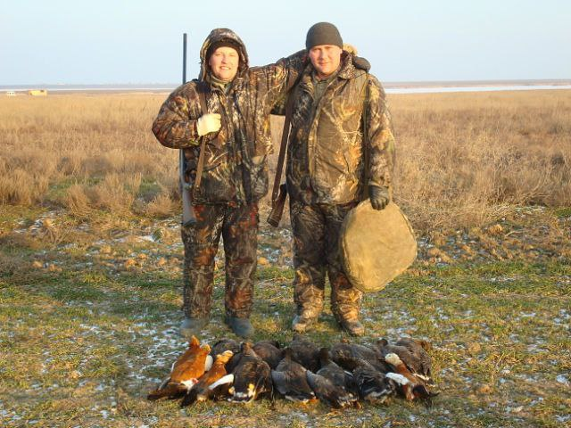

Про дядька Валентина
Валентин - дядько Єгора Лукавецького, який завжди був поруч із ним на кожному етапі його кар'єри. Він надихає Єгора своїми порадами та підтримкою, допомагаючи долати труднощі та досягати нових вершин. Валентин вірить у Єгора з самого дитинства та завжди підкреслював його таланти та здібності. Він часто бере Єгора на полювання, де вони можуть провести час разом та обговорити важливі питання. Валентин завжди був прикладом для Єгора, демонструючи силу волі та відданість своїй справі. Завдяки його підтримці, Єгор зміг впоратися з багатьма викликами та отримати високі нагороди. Вони мають особливий зв'язок, який зміцнювався роками. Валентин часто розповідає Єгору історії про свої власні пригоди та досвід, що надихає його на нові досягнення. Він також допомагає Єгору у розвитку його професійних навичок та підтримує його у важливих рішеннях. Валентин є невід'ємною частиною життя Єгора, завжди готовий прийти на допомогу та підтримати у будь-який момент.